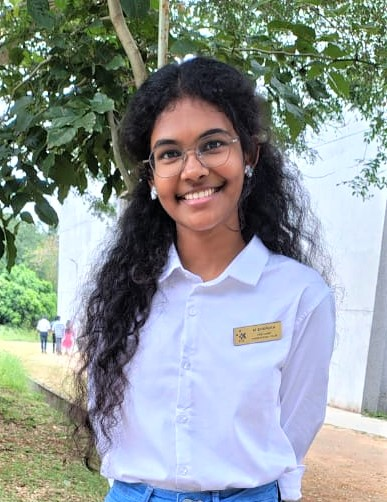

First-Year Electrical & Electronics Engineering Student with a Passion for Computer Science and Problem Solving
I am currently pursuing my Bachelor's degree in Electrical and Electronics Engineering at Karpagam College of Engineering. As a first-year student, I am actively exploring the field of computer science and developing my skills in programming, logical thinking, and problem-solving.
I am deeply interested in understanding how technology can be used to solve real-world problems. I enjoy learning new concepts, improving my technical knowledge, and building a strong foundation for future innovation.
B.E. Electrical and Electronics Engineering
Karpagam College of EngineeringAPS Academy Matric Hr. Sec. School,Tirupur
My goal is to build a strong foundation in both Electrical Engineering and Computer Science, and eventually work on impactful technologies that contribute to innovation and society. I aim to continuously learn, grow, and adapt in the ever-evolving tech landscape.